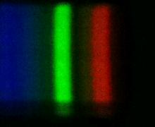

Lego SpectrometerMeasurement taken on 11/24/2021 - 14:43:09Scientist: Ada P DyerLight source: sunlite 60 watt 'super mini spiral' super white Transmission sample: none Exposure: 2000 µsec Experiment notesNormal size slit. Tracing paper. Bulb is very close to spectrometer.Tags: lightbulb, tracing-paper, cfl |
ImagesRaw imageProcessed imageSpectrum |
DataDownload data - spectrum-20211124-144309.csv |